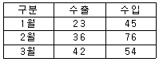
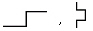
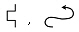
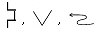
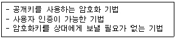
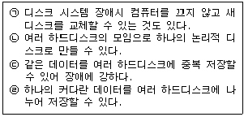

워드프로세서-(구-1급) (2004-11-14 기출문제)
1과목: 워드프로세싱 일반
1. 맞춤법 검사(Spell Check) 기능에 대한 다음 설명 중 옳지 않은 것은?
- 잘못 입력된 단어 뿐만 아니라 문법적인 오류까지도 지적해 주는 경우도 있다.
- 자주 틀리는 단어는 자동적으로 바꾸도록 지정할 수 있다.
- 사전에 없는 단어는 사용자가 추가하여 더이상 잘못된 단어로 인식하지 않도록 할 수도 있다.
- 잘못된 수식이 존재하는 경우에도 이를 찾아주어 고칠 수 있도록 한다.
(정답률: 59%)

2. 다음 중 조판기능에 대한 설명으로 옳지 않은 것은?
- 머리말은 문서의 각 페이지 윗 쪽에 고정적으로 들어가는 글이다.
- 각주는 문서의 내용을 설명하거나 인용한 문제의 제목을 알려주는 보충 구절로 해당 페이지의 하단에 표시한다.
- 미주는 문서에 나오는 문구에 대한 보충 설명들을 문서의 맨 마지막에 모아서 표기한다.
- 꼬리말은 문서의 모든 쪽에 항상 동일하게 지정된다.
(정답률: 83%)
3. 다음 중 표시장치에 대한 설명으로 옳지 않은 것은?
- 해상도란 화면표시의 정밀도, 선명도를 나타내는 용어이다.
- 해상도는 화소에 의해 결정되며, 화소수가 많을수록 선명하다.
- 모니터의 주파수 대역폭을 낮게 설정하는 것이 눈의 부담을 줄일 수 있다.
- 그래픽 카드는 성능이 높을수록 많은 수의 색상을 지원한다.
(정답률: 71%)
4. 다음 중 워드프로세서의 용어에 대한 설명으로 옳지 않은 것은?
- 상용구(Glossary) : 자주 사용하는 문자열을 미리 등록하였다가 필요할 때 입력시키는 기능으로 정형구 또는 약어등록이라고도 한다.
- 자동 반복(Auto Repeating) : 키보드를 누르고 있는 동안 같은 문자가 계속 입력되는 것을 말한다.
- 디폴트(Default) : 문서의 서식 등에서 기본적으로 설정되어 있는 값으로, 사용자가 특별히 지정하지 않으면 값이 그대로 적용된다.
- 보일러 플레이트(Boiler Plate) : 문서의 내용 중 참고문헌, 보충설명 등을 마지막 페이지에 설명하는 기능이다.
(정답률: 82%)
5. 다음 중 마우스로 영역(블록)을 지정하는 방법으로 옳지 않은 것은?
- 한 단어 영역 지정 : 해당 단어 앞에서 마우스 포인터를 놓고 세 번 클릭한다.
- 한 줄 영역 지정 : 해당 줄의 왼쪽 끝으로 마우스 포인터를 이동하여 포인터가 화살표로 바뀌면 클릭한다.
- 문단 전체 영역 지정 : 해당 문단의 왼쪽 끝으로 마우스 포인터를 이동하여 포인터가 화살표로 바뀌면 두 번 클릭한다.
- 문서 전체 영역 지정 : 문단의 왼쪽 끝으로 마우스 포인터를 이동하여 포인터가 화살표로 바뀌면 세 번 클릭 한다.
(정답률: 83%)
6. 다음 중 워드프로세서에 사용되는 한글코드에 대한 설명으로 옳은 것은?
- KS X 1001 완성형 한글코드는 문자를 주기억장치에 미리 적재시킬 필요가 없기 때문에 조합형에 비해 메모리를 적게 차지한다.
- KS X 1001 완성형 한글코드는 유니코드(KS X 10⑤-1)와 같이 영문과 한글 모두 2바이트로 표현한다.
- KS X 1001 조합형 한글코드는 정보 교환시 제어문자와 충돌하지 않아 정보교환용으로 주로 사용한다.
- 유니코드(KS X 10⑤ -1)는 현재 한글 11,172자를 모두 표현할 수 있으며 외국 소프트웨어에서도 한글을 사용할 수 있게 되었다.
(정답률: 77%)
7. 다음 중 고도의 압축기법을 통해 파일의 용량을 줄인 외곽선 형태의 글꼴로 주로 통신용으로 사용되는 글꼴 형태를 무엇이라고 하는가?
- 오픈 타입(Open Type)
- 트루 타입(True Type)
- 포스트 스크립트(Post Script)
- 벡터(Vector) 방식
(정답률: 74%)
8. 다음 중 기억장치에 대한 설명으로 옳은 것은?
- 연상기억장치(Associative Memory) : 보조기억장치 일부를 주기억장치처럼 사용하는 것을 의미한다.
- 가상기억장치(Virtual Memory) : 주기억장치의 일부를 보조기억장치처럼 사용하는 것을 의미한다.
- 레지스터(Register) : 가장 빠른 기억장치로 CPU 내부에서 주소, 명령어, 연산 결과 등을 저장하는 장치이다.
- 캐시기억장치(Cache Memory) : 주로 DRAM을 사용하며 CPU와 주기억장치 사이의 속도차이를 극복하기 위해서 사용한다.
(정답률: 74%)
9. 다음 중 컬러 잉크젯 프린터나 인쇄소에서 주로 사용하는 잉크로 옳은 것은?
- Red, Green, Blue
- Red, Green, Yellow, Black
- Cyan, Magenta, Blue
- Cyan, Magenta, Yellow, Black
(정답률: 78%)
10. 문자 입력 방법에 대한 다음 설명 중 옳지 않은 것은?
- 한글 입력 : 2벌식은 받침에 상관없이 글자를 풀어서 입력하며 3벌식은 초성, 중성, 종성을 구분하여 입력한다.
- 영문 입력 : 영문 입력상태에서 영문자를 입력하며 대/소문자의 입력은 [Caps Lock]키나 [Shift]키를 눌러 입력한다.
- 한자 입력 : 한자의 음(音)을 알아야만 입력이 가능하며 한글/한자 음절 변환, 단어 변환, 문장 자동변환 등으로 입력한다.
- 특수 문자 : 특수 문자 배열표(문자표)에서 해당 문자표를 선택한다.
(정답률: 86%)
11. 다음 중 오려두기(Cut)와 복사하기(Copy) 기능의 공통점이 아닌 것은?
- 영역을 지정하여 사용할 수 있다.
- 사용 후 문서의 크기에는 변화가 없다.
- 사용 중 클립보드(Clipboard)를 사용한다.
- 임시로 저장된 데이터를 지정한 위치에 붙여넣기 할 수 있다.
(정답률: 82%)
12. 다음 중 '상공주식회사'라는 단어를 반복적으로 입력하고자 할 때 사용할 수 있는 기능으로 적절하지 않은 것은?
- 복사하여 붙이기
- 상용구(Glossary)
- 스타일(Style)
- 매크로(Macro)
(정답률: 77%)
13. 다음 중 아래의 표에 나타난 모든 데이터를 하나의 차트로 표현하고자 할 때 적당하지 않은 차트 종류는?

- 막대 차트
- 꺾은선 차트
- 원형 차트
- 3차원 막대 차트
(정답률: 86%)
14. 다음 중 첨자문자에 대한 설명으로 옳은 것은?
- 문자의 가로와 세로의 비율이 1 : 2인 문자
- 전각문자를 가로로 2배 확대한 문자
- 전각문자의 1/4 크기의 문자
- 전각문자를 세로로 2배 확대한 문자
(정답률: 73%)
15. 다음 중 도구 상자(Tool Box)에 대한 설명으로 옳지 않은 것은?
- 자주 사용되는 메뉴를 아이콘(Icon) 형태로 나타낸 것이다.
- 본문 화면의 크기에 영향을 미친다.
- 도구 상자의 구성은 고정되어 있으므로, 위치를 바꾸거나 재구성할 수 없다.
- 비슷한 기능을 갖는 아이콘(Icon)들을 묶어 하나의 도구 모음으로 구성한다.
(정답률: 81%)
16. 전자출판(Electronic Publishing)에 관한 용어이다. 옳지 않은 것은?
- 디더링(Dithering) : 제한된 색상을 조합 또는 비율을 변화하여 새로운 색을 만드는 작업
- 리딩(Leading) : 자간의 미세 조정으로 특정 문자들의 간격을 조정
- 스프레드(Spread) : 대상체의 컬러가 배경색의 컬러보다 옅어서 대상체가 보이지 않는 현상
- 리터칭(Retouching) : 기존의 이미지를 다른 형태로 새롭게 변형시키는 작업
(정답률: 78%)
17. 다음 중 보고심사기준이 아닌 것은?(사무관리규정 개정으로 제외된 문제 입니다. 정답은 4번이었습니다. 4번을 체크하시면 정답처리 됩니다.)
- 관계기관 등과의 사전협의 여부
- 행정용어 순화 여부
- 표본조사의 가능성
- 발신방법의 지정 여부
(정답률: 88%)
18. 다음 중 문서 작성시 내용을 여러 가지 항목으로 구분할 때 넷째 항목의 구분방법은?
- ㉮, ㉯, ㉰, …
- 가, 나, 다, …
- (가), (나), (다), …
- 가), 나), 다) …
(정답률: 81%)
19. 다음 중 서로 상반되는 의미를 지닌 교정 부호로 구분된 것은?


(정답률: 86%)
20. 다음 중 문서의 분량을 증가할 수 있는 교정 부호로 묶여진 것은?

(정답률: 87%)
2과목: PC 운영 체제
21. 한글 Windows 98의 [프로그램 추가/제거 등록정보] 창에서 제공하는 Windows 설치의 구성 요소에 포함되지 않는 것은?
- 다국어 지원
- 시스템 도구
- 인터넷 익스플로러
- 주소록
(정답률: 59%)
22. 한글 Windows 98의 [탐색기]에서 여러 개의 그림파일이 있는 폴더에 대하여 파일명이나 모든 그림 파일의 내용을 실제로 보면서 작업할 수 있도록 하려면?
- 지정한 폴더의 [등록정보] 창에서 [멀리보기 사용] 지정 후에 [보기] 메뉴의 [멀리보기] 선택
- 지정한 폴더의 [등록정보] 창에서 [멀리보기 사용] 지정 후에 [보기] 메뉴의 [그림보기] 선택
- 지정한 폴더의 [등록정보] 창에서 [그림보기 사용] 지정후에 [보기] 메뉴의 [그림보기] 선택
- 지정한 폴더의 [등록정보] 창에서 [그림보기 사용] 지정 후에 [보기] 메뉴의 [멀리보기] 선택
(정답률: 44%)
23. 다음 중 한글 Windows 98에서 [디스크 조각 모음]을 할 수 있는 매체는?
- CD-ROM 드라이브
- 네트워크 드라이브
- Windows가 지원하지 않는 디스크 압축 프로그램에 의해 압축된 드라이브
- 파티션된 하드 디스크 드라이브
(정답률: 72%)
24. 다음 중 한글 Windows 98에서 오디오 설정 및 [보조 프로그램]의 [CD 재생기]에 대한 설명으로 옳지 않은 것은?
- [제어판]-[시스템]의 [장치 관리자]탭에서 해당 CD-ROM을 선택한 다음 [등록 정보]-[설정] 탭에서 '자동 삽입 통지'를 체크하지 않으면 자동 실행을 해제할 수 있다.
- CD-ROM에 연결된 헤드폰을 사용하거나, 사운드 카드가 있을 경우 스피커를 통해 소리를 들을 수 있다.
- 작업 표시줄의 트레이 영역에 스피커 아이콘이 없는 경우에는 [제어판]-[사운드]의 [오디오]탭에서 '작업 표시줄에 볼륨 조절 표시' 확인란을 선택하면 된다.
- 오디오 CD를 넣을 때 자동으로 CD 재생기가 실행되는 것을 막으려면 [Shift]키를 누른 상태에서 CD를 넣는다.
(정답률: 61%)
25. 다음 중 한글 Windows 98에서 파일 또는 폴더의 [찾기] 창에 대한 설명으로 옳지 않은 것은?
- 파일이나 폴더의 속성을 조건으로 검색할 수 있다.
- 바뀐 날짜의 이전 몇 일이라는 조건으로 검색할 수 있다.
- 포함하는 문자열을 조건으로 검색할 수 있다.
- 파일 크기의 조건으로 검색할 수 있다.
(정답률: 53%)
26. 한글 Windows 98을 사용하는 도중에 발생하는 문제를 해결하기 위한 방법으로 가장 옳은 것은?
- 디스크 공간이 부족하다면 [바이러스 검사]를 사용하여 디스크 오류를 점검한다.
- 메모리가 부족하여 프로그램을 실행할 수 없는 경우 [디스크 검사]를 실행하여 디스크 공간을 늘린다.
- 디스크 공간 부족일 경우에는 열려진 프로그램이나 문서 중 불필요한 것을 종료한다.
- 하드 디스크의 엑세스 속도 문제일 경우에는 [디스크 조각 모음]을 실행하여 단편화를 제거한다.
(정답률: 56%)
27. 다음 중 한글 Windows 98의 특징에 관한 설명으로 옳지 않은 것은?
- Windows는 32비트 운영체제로 한번에 32비트 단위의 데이터를 처리할 수 있다.
- 비선점형 멀티태스킹의 지원으로 특정한 응용 프로그램에서 문제가 발생하면 시스템 전체가 동작을 멈춘다.
- PnP(Plug and Play)기능을 지원하여 하드웨어 추가를 쉽게 한다.
- VFAT(Virtual File Allocation Table)을 지원하여 최대 255자까지의 파일 이름을 사용할 수 있다.
(정답률: 72%)
28. 한글 Windows 98의 멀티 부팅과 관련된 바로가기 키에 관하여 올바르게 연결된 것은?
- [F4] - Normal
- [F5] - Safe mode
- [F7] - Window only
- [F8] - Command prompt only
(정답률: 53%)
29. 한글 Windows 98에서 [내 컴퓨터] 창과 [탐색기] 창에서 동일하게 할 수 있는 기능이 아닌 것은?
- 파일과 폴더의 복사, 이동, 삭제 등의 작업을 할 수 있다.
- 디스크 레이블 설정 및 디스크 포맷, 디스크 복사 등의 작업을 할 수 있다.
- 프로그램 실행, 보기 형식 변경 및 아이콘 정렬 등의 작업을 할 수 있다.
- [도구] 메뉴를 이용하여 찾기, 네트워크 드라이브 연결/끊기 등의 작업을 할 수 있다.
(정답률: 52%)
30. 한글 Windows 98에서 키보드를 사용할 때 키보드 상의 키를 누르고 있으면 같은 글자가 계속 입력된다. 이러한 키의 반복 사용 기능을 무시하거나 반복 입력 속도를 줄이려면 [제어판]-[내게 필요한 옵션] 등록정보 창에서 무엇을 설정해야 하는가?
- 전환키
- 고정키
- 필터키
- 단축키
(정답률: 70%)
31. 한글 Windows 98에서 공유할 드라이브 또는 폴더의 등록 정보에서 공유와 관련된 설정 내용으로 옳지 않은 것은?
- 네트워크 상에서 검색할 때 공유할 자원의 이름에 대한 설정
- 읽기 전용이나 읽기/쓰기에 대한 설정
- 암호에 따른 사용 권한에 대한 설정
- 공유할 파일의 형식에 대한 설정
(정답률: 50%)
32. 한글 Windows 98에서 폴더나 파일의 바로 가기 메뉴에 있는 [보내기]에 대한 설명으로 옳은 것은 ?
- [보내기] 메뉴에 표시되는 대상 목록은 최대 15개까지 지정할 수 있다.
- C:\Windows\SendTo 폴더에 보낼 대상의 바로 가기를 만들면 [보내기] 메뉴의 대상 목록에 새로 추가된다.
- [보내기] 메뉴의 대상 목록에는 최근에 실행한 프로그램이 자동으로 등록된다.
- 바탕화면에 있는 '문서. txt' 파일을 마우스 오른쪽 단추로 클릭한 후 [보내기] 대상 목록에서 A 드라이브를 클릭하면 '문서.txt' 파일이 A 드라이브로 이동된다.
(정답률: 58%)
33. 다음 중 한글 Windows 98의 [그림판]에 대한 설명으로 옳지 않은 것은?
- 그리기 도구의 [돋보기]는 그림 파일을 찾기 위한 도구이다.
- 이미지를 일부 선택한 부분만 따로 저장이 가능하다.
- [이미지] 메뉴의 [속성]에서는 너비와 높이의 단위를 선택할 수 있다.
- [색] 메뉴의 [색 편집]에서는 사용자 정의 색 만들기와 색 선택이 가능하다.
(정답률: 64%)
34. 한글 Windows 98에서 IP 주소가 210.211.202.1인 컴퓨터에서 공유 이름이 '시험'인 폴더를 지정하는 방법으로 가장 적절한 것은?
- 210.211.202.1\시험
- 210.211.202.1.시험
- \\210.211.202.1\시험
- \\210.211.202.1.시험
(정답률: 75%)
35. 한글 Windows 98에서 네트워크 어댑터가 제대로 작동하지 않는 경우에 사용하는 항목으로 가장 적절한 것은?
- [디스플레이 등록정보] 창의 설정
- [시스템 등록정보] 창의 장치 관리자
- [프로그램 추가/제거 등록정보] 창의 설치/제거
- [보조 프로그램]의 시스템 도구
(정답률: 57%)
36. 한글 Windows 98에서 지원하는 스케줄링의 단위로 가장 작은 것은?
- 어플리케이션(Application)
- 프로세스(Process)
- 쓰레드(Thread)
- 태스크(Task)
(정답률: 57%)
37. 한글 Windows 98에서 [휴지통]에 있는 파일을 복원할 때 설명으로 옳지 않은 것은?
- 휴지통에 있는 해당 파일을 지정하여 [파일] 메뉴를 선택한 후 [복원]을 선택한다.
- 휴지통에 있는 해당 파일을 지정하여 바로 가기 메뉴에 있는 [복원]을 선택한다.
- 휴지통에 있는 해당 파일을 지정하여 [Ctrl]+[C] 키를 누르고, 목적하는 폴더 창에서 [Ctrl]+[V] 키를 누른다.
- 휴지통에 있는 해당 파일을 지정하여 목적하는 폴더 창으로 드래그 앤 드롭한다.
(정답률: 81%)
38. 한글 Windows 98의 기능 중에서 컴퓨터 찾기에 대한 설명으로 옳은 것은?
- NetBEUI 프로토콜로 연결된 컴퓨터를 찾을 수 있다.
- 네트워크로 연결된 컴퓨터 내의 모든 내용을 볼 수 있다.
- 네트워크 사용자에 대한 정보를 볼 수 있다.
- 현재 사용중인 컴퓨터에 공유 폴더가 있어야만 컴퓨터를 찾을 수 있다.
(정답률: 68%)
39. 다음 중 패킷 교환 방식에 대한 설명으로 옳지 않은 것은?
- 패킷 교환 방식은 회선 교환 방식에 비해 회선의 점유라는 자원 낭비가 없다.
- 패킷 교환 방식은 회선 교환 방식과 비교할 때 실시간 서비스에 있어서 더 적합하다.
- 패킷이 목적지에 도달할 수 있도록 경로 배정(Routing)이 필요하다.
- 패킷의 흐름을 제어할 수 있는 트래픽 제어(Traffic Control) 기술이 필요하다.
(정답률: 52%)
40. 한글 Windows 98을 사용할 때 USB(Universal Serial Bus) 연결 방식에 대한 설명으로 틀린 것은?
- 모든 직렬장치를 하나의 방식으로 통합하여 사용할 수 있게 해주는 주변기기 연결 방식이다.
- 시스템 사용중에도 USB 관련 연결 장치의 설치/제거가 자유롭다.
- USB로 연결할 수 있는 주변기기의 개수는 최대 127개이다.
- USB로 연결된 주변기기는 RS232C 포트를 사용해 연결된 주변기기에 비해 데이터 전송 속도가 느리다.
(정답률: 78%)
3과목: 컴퓨터 및 정보활용
41. 다음은 응용 소프트웨어에 대한 설명이다. 틀린 것은?
- 대표적인 데이터베이스 관리 시스템에는 Oracle, MySQL, Informix, MS SQL 등이 있다.
- PhotoShop, PaintShop, CorelDraw는 그래픽 소프트웨어다.
- WinZip, 알집, FrontPage는 압축 프로그램이다.
- WinAMP, 거원 JetAudio, RealPlayer는 음악 파일 재생 프로그램이다.
(정답률: 60%)
42. 디지털로 압축된 영상 신호의 데이터 구조를 정의한 것으로 상업 수준의 디지털 방송 및 DVD영상에 주도적으로 사용되고 있는 것은?
- MPEG 1
- MPEG 2
- MPEG 3
- MPEG 4
(정답률: 55%)
43. 다음 중 서로 다른 종류의 네트워크를 연결하는데 사용하는 장치는 어느 것인가?
- 게이트웨이
- 서버
- 버스
- 클라이언트
(정답률: 72%)
44. 네트워크를 통하여 전송되는 데이터 프레임은 목적지 컴퓨터의 IP 주소 외에도 네트워크 카드의 물리적인 주소인 MAC주소를 가지고 있어야 한다. 다음 중 목적지 컴퓨터의 IP 주소만 알고 MAC주소를 모르는 경우, IP주소로부터 MAC주소를 알아내는 프로토콜은 무엇인가?
- ARP
- ICMP
- NNTP
- UDP
(정답률: 60%)
45. 다음 중 RISC 프로세서의 특징으로 볼 수 없는 것은?
- CISC 프로세서에 비해 전력 소모가 적다.
- CISC 프로세서보다 명령어 개수가 적다.
- 일반 PC에 주로 사용하며 복잡한 주소지정방식을 사용한다.
- CISC 프로세서보다 처리속도가 빠르다.
(정답률: 63%)
46. 다음 중 메인보드에 간단히 끼울 수 있는 형태의 램으로 현재 대부분의 메인보드에서 채택하고 있는 것은?
- Dip RAM
- Module RAM
- PCMCIA
- Register
(정답률: 76%)
47. 다음의 내용은 어떤 암호화 기법에 대한 설명인가?

- DES
- RSA
- Back Door
- Salami
(정답률: 77%)
48. 다음 중 MIDI 파일에 대한 설명으로 옳지 않은 것은?
- MIDI는 Musical Instrument Digital Interface의 약자이다.
- MIDI 파일은 사운드 카드와 같은 MIDI 디바이스가 음악을 연주하는 방법을 알려주는 명령어를 포함한다.
- MIDI 파일에는 음표, 음악의 빠르기 및 음악의 특성들을 나타내는 명령어가 들어 있다.
- MIDI 디바이스 역할을 도와주는 사운드 카드는 여러 가지 악기를 동시에 연주할 수 없다.
(정답률: 77%)
49. 다음 중 데이터 전송제어 절차를 순서대로 올바르게 나열한 것은?
- 회선 연결 → 메시지 전송 → 데이터 링크 확립 → 데이터 링크 해제 → 회선 해제
- 데이터 링크 확립 → 회선 연결 → 메시지 전송 → 회선 해제 → 데이터 링크 해제
- 회선 연결 → 데이터 링크 확립 → 메시지 전송 → 데이터 링크 해제 → 회선 해제
- 데이터 링크 확립 → 회선 연결 → 메시지 전송 → 데이터 링크 해제 → 회선 해제
(정답률: 62%)
50. 다음 중 하드디스크의 파티션에 대한 설명으로 옳지 않은 것은?
- 하나의 물리적인 하드디스크를 여러 개의 파티션으로 나눌 수 있다.
- 파티션을 나눈 후에 사용하기 위해서는 포맷을 해야 한다.
- 하나의 하드디스크 내의 모든 파티션에는 동일한 운영체제만 설치해야 한다.
- 하나의 파티션에 한 가지 파일 시스템만을 설치할 수 있다.
(정답률: 58%)
51. 다음 중 가상기억장치에 대한 설명으로 옳지 않은 것은?
- 주기억장치와 보조기억장치로 구성된 기억체제로 주기억장치의 용량이 부족한 점을 보완하기 위해 사용한다.
- 프로그램이 사용할 수 있는 주소공간의 크기가 실제 주기억장치 기억공간의 크기보다 작을 때 사용한다.
- 가상기억장치의 구현에 페이지나 세그먼트 개념이 사용된다.
- 가상기억장치는 멀티프로그래밍을 가능하게 한다.
(정답률: 54%)
52. 다음 중 아날로그 영상을 디지털 영상으로 전송하고, 수신 후 아날로그 영상으로 복원하는 과정을 올바르게 표시한 것은 무엇인가?
- 아날로그 영상 → 부호화 → 디지털 영상 → 부호화 → 아날로그 영상
- 아날로그 영상 → 부호화 → 디지털 영상 → 복호화 → 아날로그 영상
- 아날로그 영상 → 복호화 → 디지털 영상 → 부호화 → 디지털 영상
- 아날로그 영상 → 복호화 → 아날로그 영상 → 복호화 → 디지털 영상
(정답률: 80%)
53. 다음의 여러 가지 코드에 대한 설명 중에서 옳지 않은 것은?
- ASCII 코드는 7비트 표준코드로 문자를 표현하는데 사용한다.
- BCD 코드는 자리에 따른 가중치 때문에 8421코드라고도 부른다.
- Gray 코드는 가중치를 가지고 있는 코드이다.
- 2진 정보 전송시 에러를 검출하기 위하여 패리티 비트를 사용한다.
(정답률: 69%)
54. 한 시스템에서 멀티 프로그래밍이 가능한 이유를 가장 잘 설명한 것은?
- 한 CPU에서 동시에 여러가지 명령을 처리할 수 있으므로 가능하다.
- 멀티 프로그래밍이 가능하려면 여러 개의 CPU가 있어야 하며 각 CPU가 각자의 프로그램을 실행하므로 가능하다.
- 똑같은 프로그램인 경우에만 2개 이상의 동시 실행이 가능하며 사실상 하나의 프로그램이 실행되는 것이다.
- 각 프로그램이 주어진 작은 시간만큼 CPU를 사용하고 반환하는 것을 반복하므로 가능하다.
(정답률: 65%)
55. 다음 중 멀티미디어 압축기술과 가장 관련이 적은 것은?
- JPEG(Joint Photographics Expert Group)
- MPEG(Moving Picture Expert Group)
- DVD(Digital Video Disk)
- DVI(Digital Video Interactive)
(정답률: 57%)
56. 다음 중 RAID에 대한 설명을 모두 고른 것은?

- (ㄴ) (ㄷ) (ㄹ)
- (ㄱ) (ㄴ) (ㄷ) (ㄹ)
- (ㄱ) (ㄷ) (ㄹ)
- (ㄴ) (ㄷ)
(정답률: 64%)
57. 다음 중 컴파일러(Compiler) 언어와 인터프리터(Interpreter) 언어의 차이점에 대한 설명으로 옳지 않은 것은?
- 인터프리터 언어가 컴파일러 언어보다 일반적으로 실행 속도가 빠르다.
- 인터프리터 언어는 대화식 처리가 가능하나, 컴파일러 언어는 일반적으로 불가능하다.
- 컴파일러 언어는 목적 프로그램이 있는 반면, 인터프리터 언어는 일반적으로 없다.
- 인터프리터는 번역 과정을 따로 거치지 않고 각 명령문에 대한 디코딩(Decoding)을 거쳐 직접 처리한다.
(정답률: 60%)
58. 최근 일반 가정에서 인터넷으로 널리 사용하는 ADSL에 대한 설명으로 옳은 것은?
- 동축 케이블을 사용하여 고속의 데이터 통신을 제공한다.
- 대칭형 디지털 가입자 회선이다.
- 영상 회의, 원격 진료 등과 같은 양방향 서비스에 가장 적합한 방식이다.
- 전화는 낮은 주파수를, 데이터 통신은 높은 주파수를 이용한다.
(정답률: 75%)
59. 다음 중 웹을 통한 전자 상거래 사이트가 안전한지, 안전하지 않은지를 알 수 있는 방법으로 가장 거리가 먼 것은?
- URL이 https://로 시작하는지 살펴본다.
- Verisign 등의 디지털 인증서 설치 여부를 확인한다.
- 브라우저의 상태표시줄에 자물쇠 모양이 나타났는지 살펴본다.
- SLIP 프로토콜로 연결되었는지 살펴본다.
(정답률: 62%)
60. 다음 중에서 LAN을 매체접근 제어방식으로 분류하였을 경우, 이에 해당되지 않는 것은?
- CSMA/CD
- 토폴로지(Topology)
- 토큰링(Token Ring)
- 토큰버스(Token Bus)
(정답률: 72%)